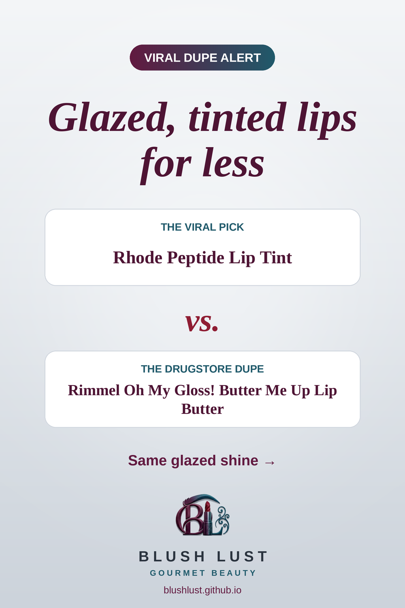

The peptide lip tint, for less
A cushiony, glossy lip butter with a sheer wash of colour, for that glazed-donut lip without the hype price.
This post contains affiliate links. If you buy through them, we may earn a small commission at no extra cost to you. As an Amazon Associate I earn from qualifying purchases.
Rimmel Oh My Gloss! Butter Me Up Lip Butter
The viral pickRhode Peptide Lip Tint
vs.
The dupeRimmel Oh My Gloss! Butter Me Up Lip Butter

See today’s price on Amazon.ca →
Comparisons reflect what beauty shoppers commonly say, not lab testing. Shades and formulas vary — check reviews before you buy.
More lips dupes
Featured in: The Lip Edit: 8 Viral Lip Dupes from the Drugstore →
Featured in: Gifts for the Lip Lover: 8 Viral Lip Dupes Under $15 →